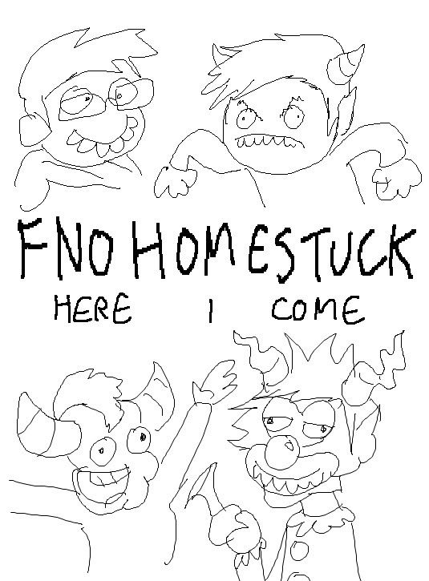

Edd. You read Homestuck, yet you don't like the fandom because of their...'attention to detail'. Surely isn't this a problem with the vast majority of fandoms? (Your own one included)

That is true, it’s always good to have attention to detail. But assuming something from little information is something else, it’s just been a while since i’ve seen so many different responses to the tiniest new bit of information. And i never said i didn’t like it, i only said i considered it one of the worst :B